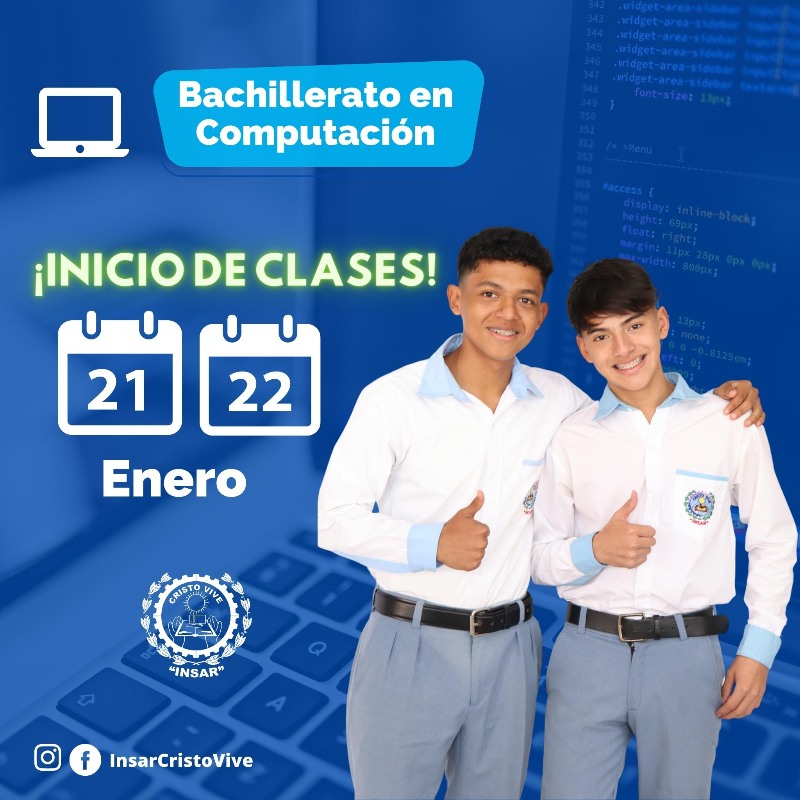

Ubicacion
3 Avenida a
Zona 1, Barberena, 06002
(+502) 7822 7801
info@insarycristovive.edu.gt
horarios
Lunes a Viernes
7:00 AM A 4:00 PM
Sabado a Domingo
1:00 PM A 5:00 PM
Esta carrera es muy novedosa, apta para jóvenes y señoritas que se consideran tener inclinación por las áreas: contable, administrativa y fiscal y ser hablantes del idioma inglés.
Los(as) estudiantes desarrollan el potencial intelectual por medio del alcance de todas las competencias y conocimientos que les permite, estar capacitados(as) en el manejo de varias clases de contabilidad, desempeño administrativo, así como el área fiscal, que les proporciona el conocimiento teórico práctico en el ámbito legal, obteniendo dominio en el análisis, interpretación y aplicación de leyes.
Desarrolla además la facilidad comunicativa en el uso del idioma inglés. Adquiere conocimientos tecnológicos al utilizar diversidad de programas específicos, que le serán de mucha utilidad al emprender su propia empresa con visión moderna, apta para la sociedad actual.
Ver PensumEsta carrera surge como una opción valiosa y novedosa para que los estudiantes desarrollen las competencias, habilidades y destrezas, a través del conocimiento de modernas herramientas y plataformas virtuales, en computación, ofimática y producción de contenidos digitales, con el fin de saber enfrentar los desafíos, exigencias y tendencias de la globalización.
La formación que reciben las y los futuros Bachilleres en Ciencias y Letras con Orientación en Computación, les prepara de forma sistemática para dotarlos de un perfil profesional, que desarrolla el conocimiento intelectual integral en los ámbitos humanista, científico y tecnológico, que les permitirá hacerle frente a los retos en la sociedad actual, poniendo de manifiesto toda una gama de principios y valores para la eficaz práctica de relaciones interpersonales, necesarias para el ejercicio profesional, abriendo la oportunidad para continuar estudios universitarios en Ingeniería de Sistemas, Marketing digital, Diseñador web, Creación de APP, entre otras.
Ver PensumBachillerato enmarcado dentro del Sistema Educativo para que jóvenes y señoritas egresados del Ciclo Básico cuenten con una opción importante para continuar estudios en diversificado. En dos años de carrera, quienes la cursan, se forman con un pensum de estudios debidamente estructurado con fundamentos teórico prácticos, por medio de los cuales se desarrollan las competencias y conocimientos científicos y tecnológicos para el manejo de recursos financieros, técnicos, físicos y la forma de administrarlos en la vida cotidiana, al utilizar toda clase de herramientas contables, en negocios empresariales.
Los egresados de esta carrera tienen valiosa oportunidad para el desempeño profesional en múltiples empresas privadas o instituciones estatales; además poder ingresar a la universidad en las carreras de Marketing Digital, Auditoria, Administración y Liderazgo.
Ver PensumValiosa oportunidad para quienes deseen desarrollar la creatividad, asumiendo un plan de estudios de dos años, en los cuales se prepara en la elaboración de planos para viviendas y edificios de dos y tres niveles.
También pueden desarrollar destrezas en la elaboración de maquetas y distintas proyecciones en perspectivas, isométricas y planos tridimensionales de diversidad de proyectos, con el apoyo de software de dibujo técnico y arquitectura.
En la universidad quienes quieren realizar su sueño de estudiar arquitectura o ingeniería civil, ingeniería de la construcción, es muy aconsejable este bachillerato, pues al graduarse pueden ejercer la profesión que resulta ser muy rentable y de buenas oportunidades para generar economía e impulsar el emprendimiento empresarial.
Ver Pensum3 Avenida a
Zona 1, Barberena, 06002
(+502) 7822 7801
info@insarycristovive.edu.gt
Lunes a Viernes
7:00 AM A 4:00 PM
Sabado a Domingo
1:00 PM A 5:00 PM